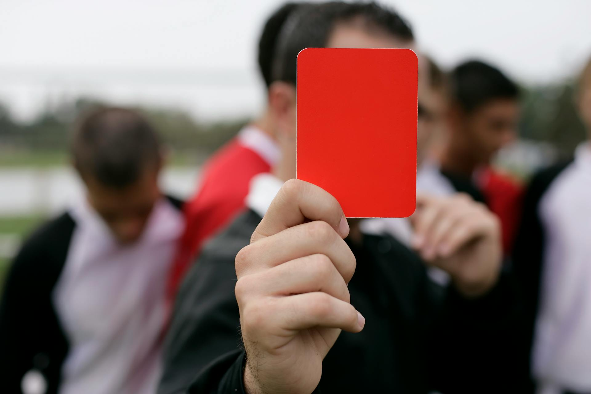

¿Que es el Futbol?

Juego entre dos equipos de once jugadores cada uno, cuyo objetivo es hacer entrar en la portería contraria un balón que no puede ser tocado con las manos ni con los brazos, salvo por el portero en su área de meta.
Reglas del futbol

Es bueno conocer a fondo las reglas del fútbol. Si quiere entender bien lo que pasa en la cancha y las decisiones arbitrales es importante saber las normas que instaura la Fifa.